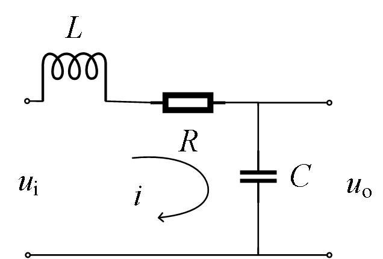
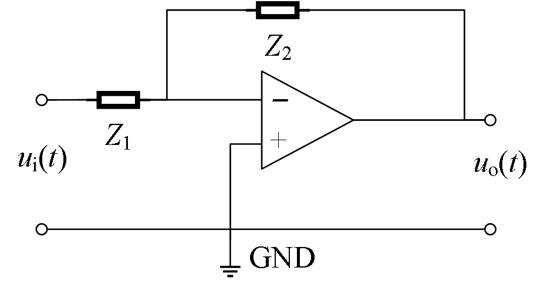
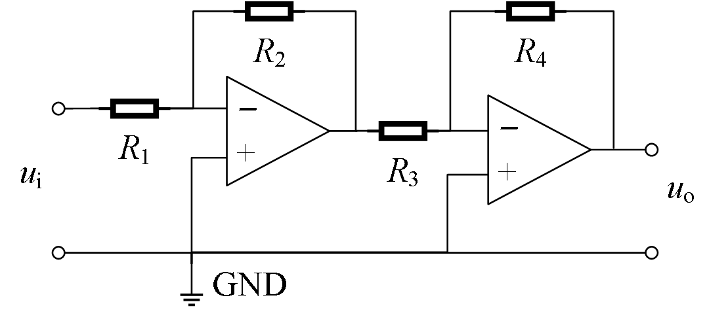
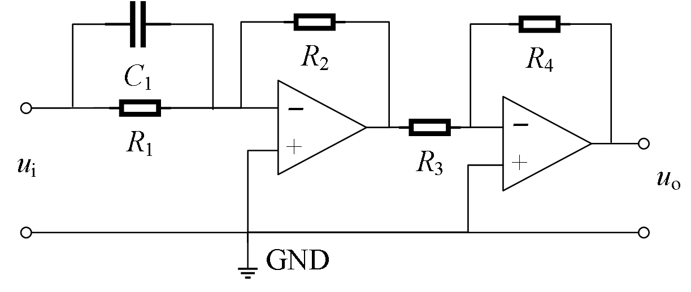
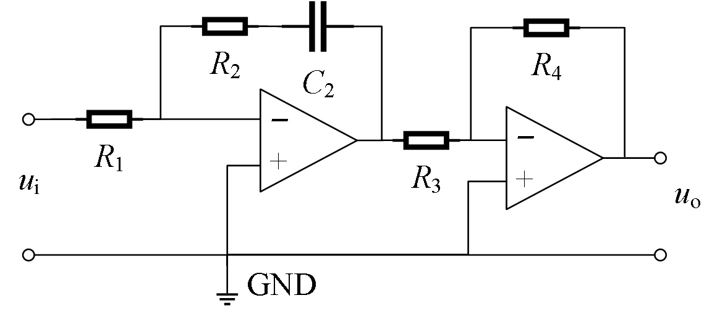
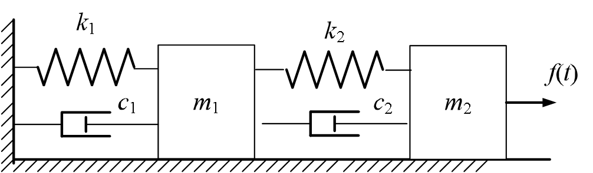
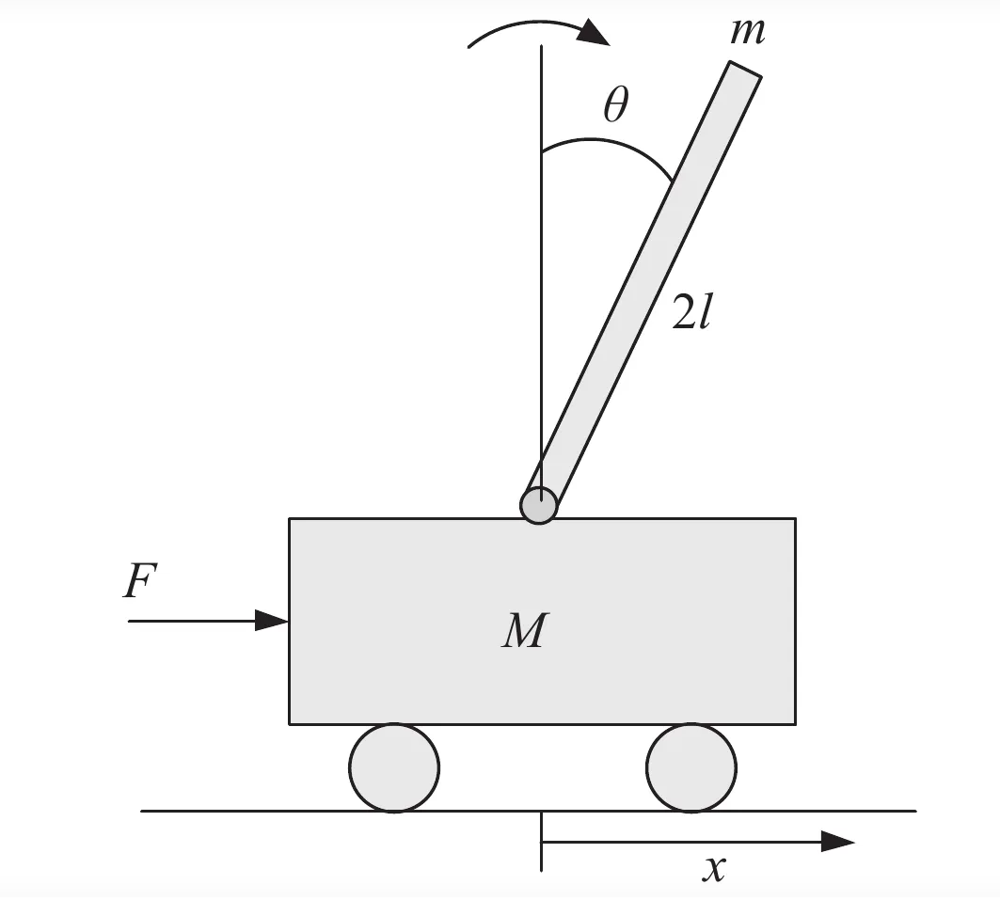
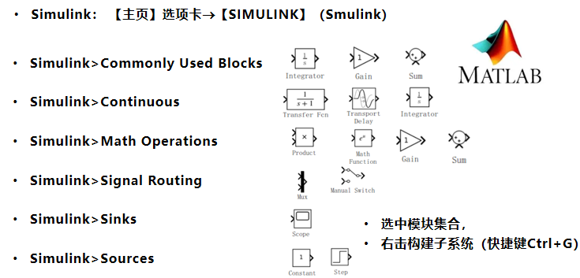

典型控制系统的数学模型
本章系统介绍典型物理系统的数学建模方法，包括电路系统、机械系统以及一阶倒立摆动力学系统。重点讲解基于第一性原理的时域建模和基于复频域的阻抗建模方法。
本章学习目标
- 掌握电路系统基于KVL和KCL的复频域建模方法
- 理解机械系统与电路系统的类比关系
- 掌握一阶倒立摆系统的动力学建模
- 学会应用Matlab/Simulink进行系统仿真
- 理解阻抗和导纳在系统建模中的应用
章节内容概述
2.4.1 电路系统的复频域建模方法
2.4.2 机械系统的复频域建模方法
2.4.3 一阶倒立摆动力学系统
2.4.4 系统模型的仿真实践
2.4.5 建模方法总结与应用
笔记说明：本笔记基于PPT内容整理，特别提取和补充了所有重要公式，确保数学推导的完整性。
电路系统的复频域建模
电路建模的基本原理
电路系统的建模基于第一性原理，核心物理定律包括：
1. 欧姆定律（电阻）
时域关系：
$$
v_R(t) = R i_R(t)
$$
复频域关系：
$$
V_R(s) = R I_R(s)
$$
2. 电感电压公式
时域关系：
$$
v_L(t) = L \frac{di_L(t)}{dt}
$$
复频域关系：
$$
V_L(s) = sL I_L(s)
$$
3. 电容电压公式
时域关系：
$$
v_C(t) = \frac{1}{C} \int i_C(t) dt
$$
复频域关系：
$$
V_C(s) = \frac{1}{sC} I_C(s)
$$
基尔霍夫定律
基尔霍夫电压定律（KVL）
时域形式：沿任一闭合回路，电压的代数和为零
$$
\sum_{k} v_k(t) = 0
$$
复频域形式：
$$
\sum_{k} V_k(s) = 0
$$
基尔霍夫电流定律（KCL）
时域形式：流入任一节点的电流代数和为零
$$
\sum_{k} i_k(t) = 0
$$
复频域形式：
$$
\sum_{k} I_k(s) = 0
$$
典型元件的复频域表示
1. 电阻（Resistor）
- 阻抗：$Z_R(s) = R$
- 导纳：$Y_R(s) = \frac{1}{R}$
2. 电感（Inductor）
- 阻抗：$Z_L(s) = sL$
- 导纳：$Y_L(s) = \frac{1}{sL}$
3. 电容（Capacitor）
- 阻抗：$Z_C(s) = \frac{1}{sC}$
- 导纳：$Y_C(s) = sC$
元件特性总结表
| 典型元件 | 时域电压-电流关系 | 复阻抗 $Z(s)$ | 复导纳 $Y(s)$ | 电量-电压关系 |
|---|---|---|---|---|
| 电阻 $R$ | $v(t) = R i(t)$ | $R$ | $\frac{1}{R}$ | - |
| 电感 $L$ | $v(t) = L\frac{di(t)}{dt}$ | $sL$ | $\frac{1}{sL}$ | - |
| 电容 $C$ | $v(t) = \frac{1}{C}\int i(t)dt$ | $\frac{1}{sC}$ | $sC$ | $q(t) = C v(t)$ |
RLC串联电路建模示例
考虑RLC串联电路：
u(t) → R → L → C → 地 |
建模步骤：
应用KVL：
$$
u(t) = v_R(t) + v_L(t) + v_C(t)
$$代入元件关系：
$$
u(t) = R i(t) + L \frac{di(t)}{dt} + \frac{1}{C} \int i(t) dt
$$拉氏变换（假设零初始条件）：
$$
U(s) = R I(s) + sL I(s) + \frac{1}{sC} I(s)
$$整理传递函数：
$$
\frac{I(s)}{U(s)} = \frac{1}{R + sL + \frac{1}{sC}} = \frac{sC}{s^2 LC + sRC + 1}
$$


RLC电路示意图基于KVL的电路系统建模流程
系统化建模步骤
Step 01：确定各回路的主阻抗
对于第$i$个回路，主阻抗$Z_{ii}$为该回路特有阻抗之和。
Step 02：确定回路间交叠支路的阻抗
对于共享支路，阻抗$Z_{ij}$（$i \neq j$）在相关回路方程中出现两次，符号相反。
Step 03：确定回路的电压源
识别每个回路中的电压源$U_i$，注意极性方向。
Step 04：建立回路方程
对于$n$个回路的系统：
$$
\begin{bmatrix}
Z_{11} & Z_{12} & \cdots & Z_{1n} \
Z_{21} & Z_{22} & \cdots & Z_{2n} \
\vdots & \vdots & \ddots & \vdots \
Z_{n1} & Z_{n2} & \cdots & Z_{nn}
\end{bmatrix}
\begin{bmatrix}
I_1 \
I_2 \
\vdots \
I_n
\end{bmatrix}
\begin{bmatrix}
U_1 \
U_2 \
\vdots \
U_n
\end{bmatrix}
$$
其中：
- $Z_{ii} = \sum$（第$i$回路所有阻抗）
- $Z_{ij} = -\sum$（回路$i$和$j$共享阻抗，$i \neq j$）
- $I_i$：第$i$回路电流
- $U_i$：第$i$回路电压源代数和
Step 05：求解传递函数
解方程组得到各回路电流$I_i(s)$，根据输出变量计算传递函数。
两回路电路示例
考虑电路：
 两回路电路示例
两回路电路示例阻抗矩阵：
$$
\begin{bmatrix}
Z_{11} & Z_{12}&Z_{13} \\
Z_{21} & Z_{22}&Z_{23}\\
Z_{31}&Z_{32}&Z_{33}
\end{bmatrix}
\begin{bmatrix}
I_1 \\
I_2\\
I_3
\end{bmatrix}
\begin{bmatrix}
U(s) \\
0\\
0
\end{bmatrix}
$$
其中：
- $Z_{11} = R_1 + R_2 + L_1s$
- $Z_{22} = R_2 + (L_1+L_2+L_3)s$
- $Z_{33}=R_1+L_2s+\frac{1}{Cs}$
- $Z_{12} = Z_{21} = R_2 + L_1s$
- $Z_{13}=Z_{31}=R_1$
- $Z_{23}=Z_{32}=L_2s$
基于KCL的电路系统建模流程
系统化建模步骤
Step 01：确定各节点的导纳
对于第$i$个节点，总导纳$Y_{ii}$为连接到该节点的所有导纳之和。
Step 02：确定节点间支路的导纳
对于连接节点$i$和$j$的支路，导纳$Y_{ij}$在两个节点方程中都会出现，通常为负值。
Step 03：确定各节点的激励电流
识别流入每个节点的电流源$I_i$，注意电流方向（流入为正）。
Step 04：建立节点方程
对于$n$个节点的系统：
$$
\begin{bmatrix}
Y_{11} & Y_{12} & \cdots & Y_{1n} \
Y_{21} & Y_{22} & \cdots & Y_{2n} \
\vdots & \vdots & \ddots & \vdots \
Y_{n1} & Y_{n2} & \cdots & Y_{nn}
\end{bmatrix}
\begin{bmatrix}
V_1 \
V_2 \
\vdots \
V_n
\end{bmatrix}
\begin{bmatrix}
I_1 \
I_2 \
\vdots \
I_n
\end{bmatrix}
$$
其中：
- $Y_{ii} = \sum$（连接到节点$i$的所有导纳）
- $Y_{ij} = -$（连接节点$i$和$j$的导纳，$i \neq j$）
- $V_i$：第$i$节点电压（相对于参考节点）
- $I_i$：流入节点$i$的电流源代数和
Step 05：求解传递函数
解方程组得到各节点电压$V_i(s)$，根据输出变量计算传递函数。
两节点电路示例
考虑电路：

导纳矩阵：
$$
\begin{bmatrix}
Y_{11} & Y_{12} \
Y_{21} & Y_{22}
\end{bmatrix}
\begin{bmatrix}
V_1 \
V_2
\end{bmatrix}
\begin{bmatrix}
I(s) \
0
\end{bmatrix}
$$
其中：
- $Y_{11} = G_1+G_2+\frac{1}{Ls}$
- $Y_{22} = G_2+Cs$
- $Y_{12} = Y_{21} = -G_2$
运算放大器电路建模
理想运算放大器特性
- 输入阻抗无穷大：$Z_{in} = \infty \Rightarrow I_+ = I_- = 0$
- 输出阻抗为零：$Z_{out} = 0$
- 开环增益无穷大：$A_{OL} = \infty$
- 虚短特性（负反馈时）：$V_+ \approx V_-$
- 虚断特性：$I_+ = I_- = 0$
基本运放电路传递函数
1. 反相放大器


节点分析电路示例传递函数：
$$
\frac{U_o(s)}{U_i(s)} = -\frac{Z_f}{Z_1}
$$
2. 同相放大器


节点分析电路示例传递函数：
$$
\frac{U_o(s)}{U_i(s)} = \frac{R_4R_2}{R_3R_1}
$$
3. 微分电路（PD控制器）


节点分析电路示例传递函数：
$$
\frac{U_o(s)}{U_i(s)} = \frac{R_4R_2}{R_3R_1}(R_1C_1s+1)
$$
4. 积分电路（PI控制器）


节点分析电路示例传递函数：
$$
\frac{U_o(s)}{U_i(s)} = \frac{R_4R_2}{R_3R_1}(\frac{R_2C_2s+1}{R_2C_2s})
$$
运放电路设计公式
1. 反相放大器设计
- 增益：$A_v = -\frac{R_f}{R_1}$
- 输入阻抗：$Z_{in} = R_1$
- 带宽：$f_{-3dB} = \frac{GBW}{|A_v|}$（GBW为增益带宽积）
2. 同相放大器设计
- 增益：$A_v = 1 + \frac{R_f}{R_1}$
- 输入阻抗：$Z_{in} \approx \infty$（理想）
- 共模抑制比：CMRR影响精度
|
2.4.5 机械系统的复频域建模
机械系统的基本元件
1. 质量（Mass）
牛顿第二定律：
$$
F(t) = m \frac{d^2 x(t)}{dt^2}
$$
复频域关系：
$$
F(s) = m s^2 X(s)
$$
机械阻抗：
$$
Z_m(s) = m s^2
$$
2. 阻尼器（Damper）
阻尼力：
$$
F(t) = b \frac{dx(t)}{dt}
$$
复频域关系：
$$
F(s) = b s X(s)
$$
机械阻抗：
$$
Z_b(s) = b s
$$
3. 弹簧（Spring）
胡克定律：
$$
F(t) = k x(t)
$$
复频域关系：
$$
F(s) = k X(s)
$$
机械阻抗：
$$
Z_k(s) = k
$$
机械阻抗总结表
| 典型元件 | 时域力-位移关系 | 复阻抗 $Z(s)$ | 速度阻抗 |
|---|---|---|---|
| 质量 $m$ | $F = m\frac{d^2x}{dt^2}$ | $m s^2$ | $m s$ |
| 阻尼器 $b$ | $F = b\frac{dx}{dt}$ | $b s$ | $b$ |
| 弹簧 $k$ | $F = k x$ | $k$ | $\frac{k}{s}$ |
机械系统与电路系统的类比
| 机械系统 | 电路系统 | 类比关系 | 对应公式 |
|---|---|---|---|
| 力 $F$ | 电压 $V$ | 激励 | $F \leftrightarrow V$ |
| 速度 $v$ | 电流 $I$ | 响应 | $v = \frac{dx}{dt} \leftrightarrow I = \frac{dq}{dt}$ |
| 位移 $x$ | 电荷 $q$ | 积分关系 | $x \leftrightarrow q$ |
| 质量 $m$ | 电感 $L$ | $F=ma$ ↔ $V=L\frac{dI}{dt}$ | $m \leftrightarrow L$ |
| 阻尼 $b$ | 电阻 $R$ | $F=bv$ ↔ $V=RI$ | $b \leftrightarrow R$ |
| 弹簧 $k$ | 电容 $C$ | $F=kx$ ↔ $V=\frac{1}{C}q$ | $k \leftrightarrow \frac{1}{C}$ |
弹簧-质量-阻尼系统建模
考虑系统：
 节点分析电路示例
节点分析电路示例力平衡方程（牛顿第二定律）：
$$
F(t) - kx(t) - b\frac{dx(t)}{dt} = m\frac{d^2x(t)}{dt^2}
$$
整理为标准形式：
$$
m\frac{d^2x(t)}{dt^2} + b\frac{dx(t)}{dt} + kx(t) = F(t)
$$
拉氏变换（零初始条件）：
$$
(m s^2 + b s + k) X(s) = F(s)
$$
传递函数：
$$
\frac{X(s)}{F(s)} = \frac{1}{m s^2 + b s + k}
$$
两自由度机械系统建模
考虑系统：


节点分析电路示例力平衡方程：
对于质量$m_1$：
$$
k_2x_2+c_2\dot{x_2}-[x_1(k_1+k_2)+\dot{x_1}(c_+c_2)] = m_1 \ddot{x}_1
$$
对于质量$m_2$：
$$
f(t)+k_2x_1+c_2\dot{x_1}-k_2x_2-c_2\dot{x_1}=m_2\ddot{x_2}
$$
复频域方程：
$$
\begin{cases}
(k_2+c_2s+m_2s^2)X_2(s)-(k_1+c_1s)X_1(s) = F(s) \\
(k_1+k_2+c_1s+c_2s+m_1s^2)X_1(s)-(k_2+c_2s)X_2(s) = 0
\end{cases}
$$
2.4.6 一阶倒立摆动力学系统
系统描述
一阶倒立摆是经典的控制系统研究对象，由一个可在水平方向移动的小车和安装在车上的倒立摆杆组成。
系统参数：
- $M$：小车质量
- $m$：摆杆质量
- $l$：摆杆长度（质心到铰接点距离）
- $b$：小车与轨道间的摩擦系数
- $I$：摆杆绕质心的转动惯量
- $F$：施加在小车上的水平力
- $x$：小车水平位移
- $\theta$：摆杆与垂直方向的夹角


节点分析电路示例动力学方程推导
1. 小车水平方向受力分析
小车受到水平力$F$、摩擦力$-b\dot{x}$以及摆杆对车的水平作用力$H$：
$$
M\ddot{x} = F - b\dot{x} - H
\tag{1}
$$
2. 摆杆水平方向受力分析
摆杆质心水平加速度为$\ddot{x} + l\ddot{\theta}\cos\theta - l\dot{\theta}^2\sin\theta$，水平方向受力为$H$：
$$
m(\ddot{x} + l\ddot{\theta}\cos\theta - l\dot{\theta}^2\sin\theta) = H
\tag{2}
$$
3. 摆杆绕质心转动分析
摆杆绕质心的转动惯量为$I$，力矩包括重力矩$-mgl\sin\theta$和铰接力矩$H l \cos\theta$：
$$
I\ddot{\theta} = -mgl\sin\theta + H l \cos\theta
\tag{3}
$$
线性化处理
假设摆杆在小角度附近运动（$\theta \approx 0$），可进行如下近似：
- $\sin\theta \approx \theta$
- $\cos\theta \approx 1$
- $\dot{\theta}^2 \approx 0$（高阶小量）
线性化后的方程：
由方程(2)：
$$
m(\ddot{x} + l\ddot{\theta}) = H
\tag{4}
$$
由方程(3)：
$$
I\ddot{\theta} = -mgl\theta + H l
\tag{5}
$$
将方程(4)代入方程(5)消去$H$：
$$
I\ddot{\theta} = -mgl\theta + ml(\ddot{x} + l\ddot{\theta})
$$
整理得：
$$
(I - ml^2)\ddot{\theta} - ml\ddot{x} = -mgl\theta
\tag{6}
$$
状态空间表示
定义状态变量：
$$
\mathbf{x} = \begin{bmatrix} x \ \dot{x} \ \theta \ \dot{\theta} \end{bmatrix}, \quad u = F
$$
状态方程：
由方程(1)和(4)：
$$
M\ddot{x} = F - b\dot{x} - m(\ddot{x} + l\ddot{\theta})
$$
整理得：
$$
(M+m)\ddot{x} + b\dot{x} + ml\ddot{\theta} = F
\tag{7}
$$
联立方程(6)和(7)：
$$
\begin{cases}
(M+m)\ddot{x} + b\dot{x} + ml\ddot{\theta} = F \
ml\ddot{x} + (I+ml^2)\ddot{\theta} - mgl\theta = 0
\end{cases}
$$
矩阵形式：
$$
\begin{bmatrix}
M+m & ml \
ml & I+ml^2
\end{bmatrix}
\begin{bmatrix}
\ddot{x} \
\ddot{\theta}
\end{bmatrix}
+
\begin{bmatrix}
b & 0 \
0 & -mgl
\end{bmatrix}
\begin{bmatrix}
\dot{x} \
\theta
\end{bmatrix}
\begin{bmatrix}
F \
0
\end{bmatrix}
$$
状态空间模型：
$$
\dot{\mathbf{x}} = A\mathbf{x} + Bu
$$
其中：
$$
A = \begin{bmatrix}
0 & 1 & 0 & 0 \
0 & -\frac{(I+ml^2)b}{\Delta} & \frac{m^2gl^2}{\Delta} & 0 \
0 & 0 & 0 & 1 \
0 & -\frac{mlb}{\Delta} & \frac{mgl(M+m)}{\Delta} & 0
\end{bmatrix},
\quad
B = \begin{bmatrix}
0 \
\frac{I+ml^2}{\Delta} \
0 \
\frac{ml}{\Delta}
\end{bmatrix}
$$
$$
\Delta = (M+m)(I+ml^2) - (ml)^2
$$
系统模型的仿真实践
Matlab基础操作
常用命令
clear all % 清除工作区内所有变量 |
传递函数表示
% 创建传递函数 |
Simulink仿真基础
常用模块
连续模块（Continuous）
- Integrator：积分器
- Derivative：微分器
- Transfer Fcn：传递函数
数学运算（Math Operations）
- Sum：求和点
- Gain：比例增益
- Product：乘法器
信号路由（Signal Routing）
- Mux：多路信号合并
- Demux：多路信号分离
信源（Sources）
- Step：阶跃信号
- Sine Wave：正弦信号
- Constant：常数信号
信宿（Sinks）
- Scope：示波器
- To Workspace：输出到工作空间
- Display：数值显示
子系统创建
选中多个模块，右键选择"Create Subsystem"或按Ctrl+G，可以创建子系统。
建模示例
1. RLC电路仿真
% RLC电路仿真 |
2. 机械系统仿真
% 弹簧-质量-阻尼系统仿真 |
3. 倒立摆系统仿真
% 倒立摆参数 |


节点分析电路示例编程语言对比
| 编程语言 | 编程环境IDE | 特点 | 适用场景 |
|---|---|---|---|
| C/C++ | VS, VS-Code | 静态语言，性能高 | 嵌入式系统，实时控制 |
| M语言 | Matlab | 动态语言，矩阵运算强 | 控制系统设计，仿真 |
| Julia | Syslab | 动态语言，性能接近C | 科学计算，数值分析 |
| Modelica | Sysplorer | 多领域建模语言 | 多物理场系统建模 |
建模方法总结
电路系统建模要点
- 阻抗概念：理解电阻、电感、电容的复频域表示
- KVL/KCL应用：掌握基尔霍夫定律在复频域的应用
- 系统化流程：遵循标准化建模步骤
- 矩阵表示：对于多回路/多节点系统，使用矩阵方法
- 运放电路：掌握理想运放特性及基本电路设计
机械系统建模要点
- 力平衡：基于牛顿定律建立力平衡方程
- 机械阻抗：理解质量、阻尼、弹簧的阻抗表示
- 系统类比：利用电路-机械类比简化建模
- 多自由度：掌握多自由度系统的建模方法
- 线性化：掌握非线性系统的线性化方法
倒立摆系统建模要点
- 动力学分析：基于牛顿-欧拉方程建立完整动力学模型
- 线性化处理：在小角度假设下进行线性化
- 状态空间：掌握状态空间表示方法
- 参数识别：理解各物理参数对系统动态的影响
通用建模策略
- 第一性原理：从物理定律出发建立数学模型
- 复频域转换：将时域方程转换为复频域表示
- 系统化表示：使用传递函数或状态空间表示
- 仿真验证：通过仿真验证模型正确性
- 参数辨识：实际系统参数需要测量或辨识
工程应用注意事项
- 实际约束：考虑物理实现的限制（如饱和、死区等）
- 负载效应：考虑后续系统对前级系统的影响
- 非线性处理：实际系统可能存在非线性，需要线性化
- 参数不确定性：实际参数与理论值存在差异
- 鲁棒性设计：考虑参数变化对系统性能的影响
实践练习
练习 1：电路系统建模
对于以下电路，建立输入$U(s)$到输出$I(s)$的传递函数：
R₁ L |
参数：$R_1=10\Omega$, $R_2=20\Omega$, $R_3=30\Omega$, $L=0.1H$, $C=0.01F$
要求：
- 使用KVL方法建立模型
- 计算传递函数$\frac{I(s)}{U(s)}$
- 讨论系统的频率特性
- 计算系统的自然频率和阻尼比
练习 2：机械系统建模
对于两自由度机械系统：
k₁ m₁ k₂ m₂ |
参数：$m_1=1kg$, $m_2=2kg$, $k_1=100N/m$, $k_2=200N/m$, $b_1=5Ns/m$, $b_2=10Ns/m$
要求：
- 建立力平衡方程
- 转换为复频域方程
- 求解$X_1(s)/F(s)$和$X_2(s)/F(s)$
- 分析系统的振动模态
练习 3：倒立摆系统分析
对于一阶倒立摆系统，给定参数：
$M=0.5kg$, $m=0.2kg$, $l=0.3m$, $b=0.1N/m/s$, $g=9.81m/s^2$
要求：
- 推导线性化后的状态空间模型
- 计算系统矩阵$A$和输入矩阵$B$
- 分析系统稳定性（计算特征值）
- 设计状态反馈控制器使系统稳定
练习 4：Matlab仿真
使用Matlab仿真上述三个系统：
- 计算并绘制阶跃响应
- 计算并绘制频率响应（Bode图）
- 分析系统稳定性
- 比较不同参数对系统性能的影响
本章小结
核心知识点总结
电路系统建模：
- 阻抗和导纳的概念
- 基于KVL和KCL的建模流程
- 运算放大器电路分析
- 多回路系统矩阵表示
机械系统建模：
- 机械阻抗的概念
- 力平衡方程的建立
- 与电路系统的类比关系
- 多自由度系统分析
倒立摆系统：
- 完整动力学方程推导
- 线性化处理方法
- 状态空间表示
- 稳定性分析
仿真工具应用：
- Matlab传递函数表示
- Simulink模块化仿真
- 系统响应分析
- 控制器设计
重要公式回顾
电路元件阻抗：
- 电阻：$Z_R = R$
- 电感：$Z_L = sL$
- 电容：$Z_C = \frac{1}{sC}$
机械元件阻抗：
- 质量：$Z_m = ms^2$
- 阻尼：$Z_b = bs$
- 弹簧：$Z_k = k$
基本传递函数：
- RLC电路：$\frac{I(s)}{U(s)} = \frac{1}{R + sL + \frac{1}{sC}}$
- 质量-弹簧-阻尼：$\frac{X(s)}{F(s)} = \frac{1}{ms^2 + bs + k}$
倒立摆状态方程：
$$
\dot{\mathbf{x}} = A\mathbf{x} + Bu
$$
其中：
$$
\Delta = (M+m)(I+ml^2) - (ml)^2
$$
学习建议
- 理论与实践结合：将理论建模与实际仿真结合
- 多做练习：通过大量练习掌握建模技巧
- 理解物理意义：深入理解公式的物理背景
- 掌握工具使用：熟练使用Matlab/Simulink进行仿真
- 系统思维培养：培养从物理系统到数学模型的系统化思维
工程意义
- 控制系统设计基础：为控制器设计提供被控对象模型
- 系统分析工具：通过模型分析系统动态特性
- 跨学科应用：建模方法适用于多个工程领域
- 实际问题解决：为实际工程问题提供分析框架
- 创新设计支持：支持新型控制系统设计与优化
系统建模是控制系统设计与分析的基础，掌握典型物理系统的数学建模方法对于控制工程师至关重要。通过本章学习，应能独立完成电路系统、机械系统和倒立摆系统的数学建模和仿真分析，为后续控制器设计奠定坚实基础。